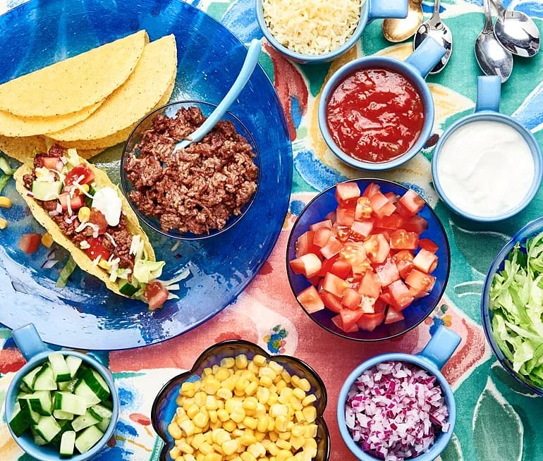

Description:
Tacos is a loved dish everywhere in the world. However, all variants are unique in their own way.
Today we will show you how you can make Swedish tacos as home.
Ingredients (For 4 portions):
- 8 medium sized tortilla breads
- 500 g minced meat
- Santa maria taco spices
- 1 jar of salsa
- 1 jar of cremé fraiche
- 1 cucumber
- 2 tomatoes
- 1 red onion
- 250 g grated cheese
Steps:
Start frying the minced meat in cooking oil or butter.
While the minced meat is cooking, dice all vegetables and put them in seperate bowls.
When the meat has turned brown - Add the taco spices and 1 dl of water to the pan. Fry for 2-3 minutes until most of the water has dissepated.
Serve all ingredients directly to the table to allow everyone to build their own Swedish tacos.
Warm tortilla bread in the microwave just before eating them.
Enjoy!
(P.S. Other options for ingredients are guacamole, tortilla chips, feta cheese etc. Feel free to experiment!)
Return to top
Return to Main Menu